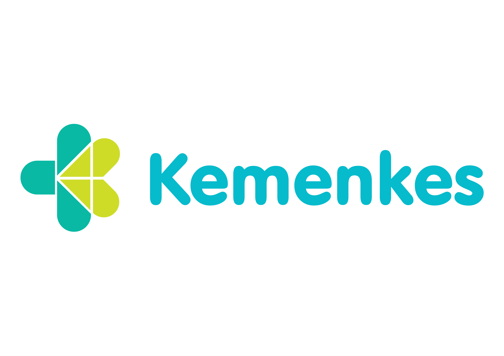
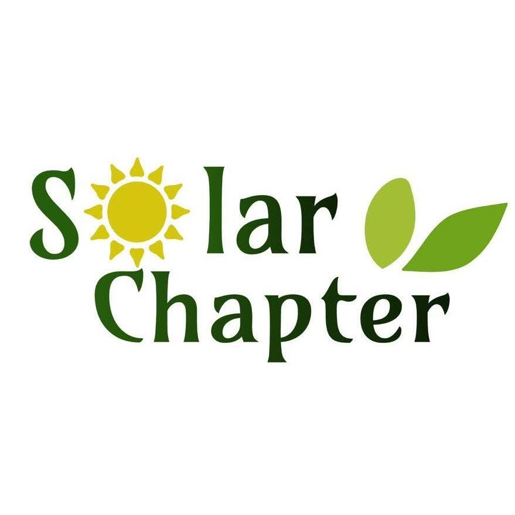
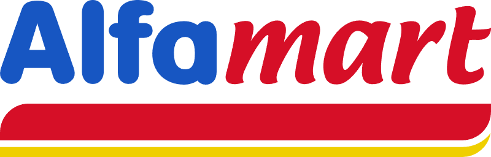

From clean water in 12 villages to national health apps used across 44 clinics — I'm a PMP-certified project manager who connects international teams with on-the-ground delivery in Indonesia.

MoH
SC
AMFull project lifecycles — budgeting, procurement, logistics — delivered on time and within budget, then turned into a data story that grew sponsor funding 40%.
Took five new food-and-beverage branches from zero to open in 90 days, treating each launch as a brand + ops + campaign sprint.
Led full project lifecycles to bring clean water to 6,000+ residents, then turned the results into a data story that grew sponsor funding.
Shipped a citizen-facing app that, for the first time, let residents across 44 puskesmas access free health-screening results digitally.
Built an automated Asana workflow and leadership dashboards that scaled oversight of 30+ concurrent projects across continents.
From Seattle to Jakarta, I connect international organizations with on-the-ground teams — and keep 30+ projects moving on a single source of truth.
Staying active is how I reset. The discipline, teamwork, and "leave it all on the field" mindset are the same things I bring to a project deadline.
Wherever I travel, I'm framing it. Photography trains the same eye for detail and composition that makes for clean, considered work.